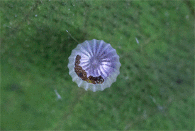

AN INCOMPLETE MANIFESTO FOR GROWTH
written by ... Bruce Mao

You have to be willing to grow. Growth is different from something that happens to you. You produce it. You live it. The prerequisites for growth: the openness to experience events and the willingness to be changed by them.
Good is a known quantity. Good is what we all agree on. Growth is not necessarily good. Growth is an exploration of unlit recesses that may or may not yield to our research. As long as you stick to good you’ll never have real growth.
When the outcome drives the process we will only ever go to where we’ve already been. If process drives outcome we may not know where we’re going, but we will know we want to be there.
Joy is the engine of growth. Exploit the liberty in casting your work as beautiful experiments, iterations, attempts, trials, and errors. Take the long view and allow yourself the fun of failure every day.
The deeper you go the more likely you will discover something of value.
The wrong answer is the right answer in search of a different question. Collect wrong answers as part of the process. Ask different questions.
A studio is a place of study. Use the necessity of production as an excuse to study. Everyone will benefit.
Allow yourself to wander aimlessly. Explore adjacencies. Lack judgment. Postpone criticism.
John Cage tells us that not knowing where to begin is a common form of paralysis. His advice: begin anywhere.
Growth happens. Whenever it does, allow it to emerge. Learn to follow when it makes sense. Let anyone lead.
Ideas need a dynamic, fluid, generous environment to sustain life. Applications, on the other hand, benefit from critical rigor. Produce a high ratio of ideas to applications.
The market and its operations have a tendency to reinforce success. Resist it. Allow failure and migration to be part of your practice.
Desynchronize from standard time frames and surprising opportunities may present themselves.
Cool is conservative fear dressed in black. Free yourself from limits of this sort.
Growth is fuelled by desire and innocence. Assess the answer, not the question. Imagine learning throughout your life at the rate of an infant.
The space between people working together is filled with conflict, friction, strife, exhilaration, delight, and vast creative potential.
Intentionally left blank. Allow space for the ideas you haven’t had yet, and for the ideas of others.
Strange things happen when you’ve gone too far, been up too long, worked too hard, and you’re separated from the rest of the world.
Every object has the capacity to stand for something other than what is apparent. Work on what it stands for.
Time is genetic. Today is the child of yesterday and the parent of tomorrow. The work you produce today will create your future.

If you like it, do it again. If you don’t like it, do it again.
Hybridize your tools in order to build unique things. Even simple tools that are your own can yield entirely new avenues of exploration. Remember, tools amplify our capacities, so even a small tool can make a big difference
You can travel farther carried on the accomplishments of those who came before you. And the view is so much better.
The problem with software is that everyone has it.
You might find something in the morning that you can’t see tonight.
Just don’t. It’s not good for you.
Marshall McLuhan did this. By decreasing the amount of information, we leave room for what he called our ‘noodle’.
Expand the lexicon. The new conditions demand a new way of thinking. The thinking demands new forms of expression. The expression generates new conditions.
Forget technology. Creativity is not device–dependent.
Real innovation in design, or any other field, happens in context. That context is usually some form of cooperatively managed enterprise. Frank Gehry, for instance, is only able to realize Bilbao because his studio can deliver it on budget. The myth of a split between ‘creatives’ and ‘suits’ is what Leonard Cohen calls a “charming artifact of the past.”
Once again, Frank Gehry’s advice. By maintaining financial control, we maintain creative control. It’s not exactly rocket science, but it’s surprising how hard it is to maintain this discipline, and how many have failed.
Every collaborator who enters our orbit brings with him or her a world more strange and complex than any we could ever hope to imagine. By listening to the details and the subtlety of their needs, desires, or ambitions, we fold their world onto our own. Neither party will ever be the same.
The bandwidth of the world is greater than that of your TV set, or the Internet, or even a totally immersive, interactive, dynamically rendered, object–oriented, real–time, computer graphic–simulated environment.
This isn’t my idea—I borrowed it. I think it belongs to Andy Grove.
Don’t be shy about it. Try to get as close as you can. You’ll never get all the way, and the separation might be truly remarkable. We have only to look to Richard Hamilton and his version of Marcel Duchamp’s large glass to see how rich, discredited, and underused imitation is as a technique.

When you forget the words, do what Ella did: make up something else… but not words.
Great liberty exists when we avoid trying to run with the technological pack. We can’t find the leading edge because it’s trampled underfoot. Try using old–tech equipment made obsolete by an economic cycle but still rich with potential.
Real growth often happens outside of where we intend it to, in the interstitial spaces—what Dr. Seuss calls “the waiting place.” Hans Ulrich Obrist once organized a science and art conference with all of the infrastructure of a conference—the parties, chats, lunches, airport arrivals—but with no actual conference. Apparently it was hugely successful and spawned many ongoing collaborations.
Disciplinary boundaries and regulatory regimes are attempts to control the wilding of creative life. They are often understandable efforts to order what are manifold, complex, evolutionary processes. Our job is to jump the fences and cross the fields.
People visiting the studio often comment on how much we laugh. Since I’ve become aware of this, I use it as a barometer of how comfortably we are expressing ourselves.
Growth is only possible as a product of history. Without memory, innovation is merely novelty. History gives growth a direction. But a memory is never perfect. Every memory is a degraded or composite image of a previous moment or event. That’s what makes us aware of its quality as a past and not a present. It means that every memory is new, a partial construct different from its source, and, as such, a potential for growth itself.
Play can only happen when people feel they have control over their lives. We can’t be free agents if we’re not free.